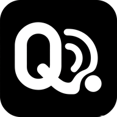

改了哪些地方、长什么样。图片全部引用仓库里的真图 static/icon/xxxhdpi.png，浏览器打开即可核对。
尺寸取各自 CSS 的实际值（rpx 按 750 设计宽 ÷2 折成 px）。每个位置都给了手机端和宽屏两档。

下面这些图形是浏览器按脚本同一套算法（alpha = 亮度）从真图现算的，等于生成脚本的产物预览。
python tools/gen-app-logo.py --apply brand --notifnativeResources/android/res/drawable-{mdpi..xxxhdpi}/ic_qt_notification_glyph.png，
并顺手删掉已弃用的手绘兜底矢量 drawable/ic_qt_notification.xml。/static/icon/xxxhdpi.png 图片，跑不跑脚本都会跟着这次改动生效，重新打包即可看到。